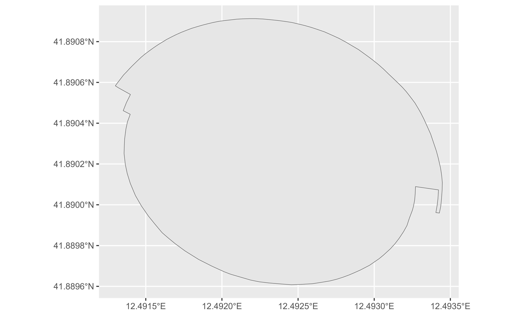
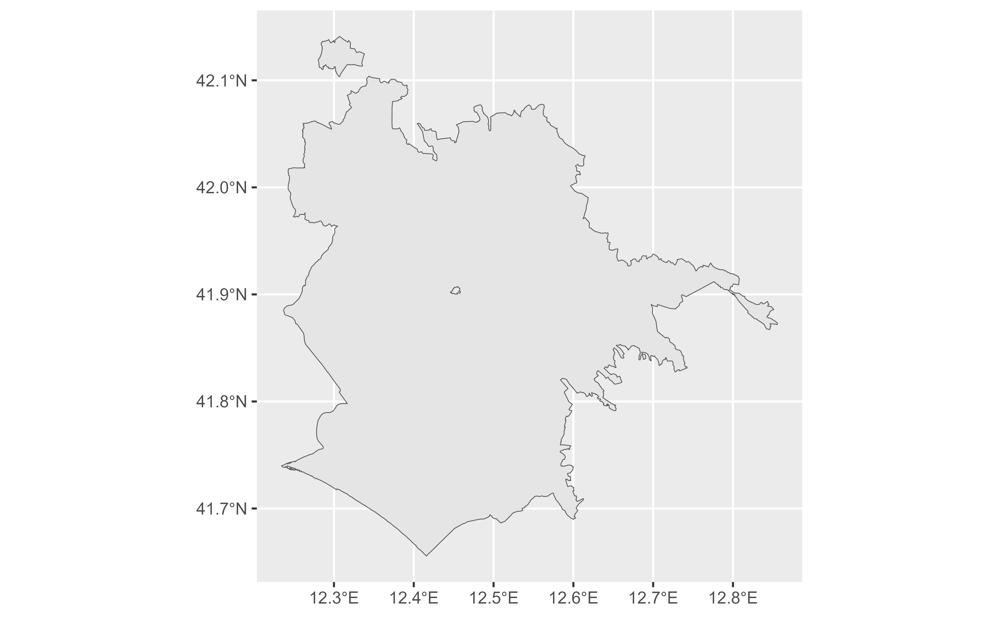

Reverse Geocoding API for OSM objects in Spatial format
Source:R/reverse_geo_lite_sf.R
reverse_geo_lite_sf.RdGenerates an address from a latitude and longitude. Latitudes must be
between [-90, 90] and longitudes between [-180, 180]. This function
returns the sf spatial object associated with the query, see
reverse_geo_lite() for retrieving the data in tibble format.
Usage
reverse_geo_lite_sf(
lat,
long,
address = "address",
full_results = FALSE,
return_coords = TRUE,
verbose = FALSE,
custom_query = list(),
points_only = TRUE
)Arguments
- lat
latitude values in numeric format. Must be in the range
[-90, 90].- long
longitude values in numeric format. Must be in the range
[-180, 180].- address
address column name in the output data (default
"address").- full_results
returns all available data from the API service. If
FALSE(default) only latitude, longitude and address columns are returned. See alsoreturn_addresses.- return_coords
return input coordinates with results if
TRUE.- verbose
if
TRUEthen detailed logs are output to the console.- custom_query
API-specific parameters to be used, passed as a named list (ie.
list(zoom = 3)). See Details.- points_only
Logical
TRUE/FALSE. Whether to return only spatial points (TRUE, which is the default) or potentially other shapes as provided by the Nominatim API (FALSE). See About Geometry Types.
Details
See https://nominatim.org/release-docs/develop/api/Reverse/ for additional
parameters to be passed to custom_query.
About Zooming
Use the option custom_query = list(zoom = 3) to adjust the output. Some
equivalences on terms of zoom:
| zoom | address_detail |
| 3 | country |
| 5 | state |
| 8 | county |
| 10 | city |
| 14 | suburb |
| 16 | major streets |
| 17 | major and minor streets |
| 18 | building |
About Geometry Types
The parameter points_only specifies whether the function results will be
points (all Nominatim results are guaranteed to have at least point
geometry) or possibly other spatial objects.
Note that the type of geometry returned in case of points_only = FALSE
will depend on the object being geocoded:
administrative areas, major buildings and the like will be returned as polygons
rivers, roads and their like as lines
amenities may be points even in case of a
points_only = FALSEcall
The function is vectorized, allowing for multiple addresses to be geocoded;
in case of points_only = FALSE multiple geometry types may be returned.
See also
Reverse geocoding coordinates:
reverse_geo_lite()
Get spatial (`sf`) objects:
bbox_to_poly(),
geo_address_lookup_sf(),
geo_amenity_sf(),
geo_lite_sf()
Examples
# \donttest{
library(ggplot2)
Coliseum <- geo_lite("Coliseo, Rome, Italy")
# Coliseum
Col_sf <- reverse_geo_lite_sf(
lat = Coliseum$lat,
lon = Coliseum$lon,
points_only = FALSE
)
ggplot(Col_sf) +
geom_sf()

# City of Rome - Zoom 10
Rome_sf <- reverse_geo_lite_sf(
lat = Coliseum$lat,
lon = Coliseum$lon,
custom_query = list(zoom = 10),
points_only = FALSE
)
ggplot(Rome_sf) +
geom_sf()

# County - Zoom 8
County_sf <- reverse_geo_lite_sf(
lat = Coliseum$lat,
lon = Coliseum$lon,
custom_query = list(zoom = 8),
points_only = FALSE
)
ggplot(County_sf) +
geom_sf()
 # }
# }